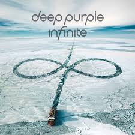

Discografía
Estos son algunos de los álbumes más representativos de esta banda, con enlace directo a YouTube para escuchar el disco completo.
Álbumes Destacados

inFinite (2017)
Disco potente y maduro, combina rock melódico con técnica avanzada.
Escuchar en YouTube

Turning to Crime (2021)
Un álbum de versiones que rinde homenaje a sus influencias.
Escuchar en YouTube